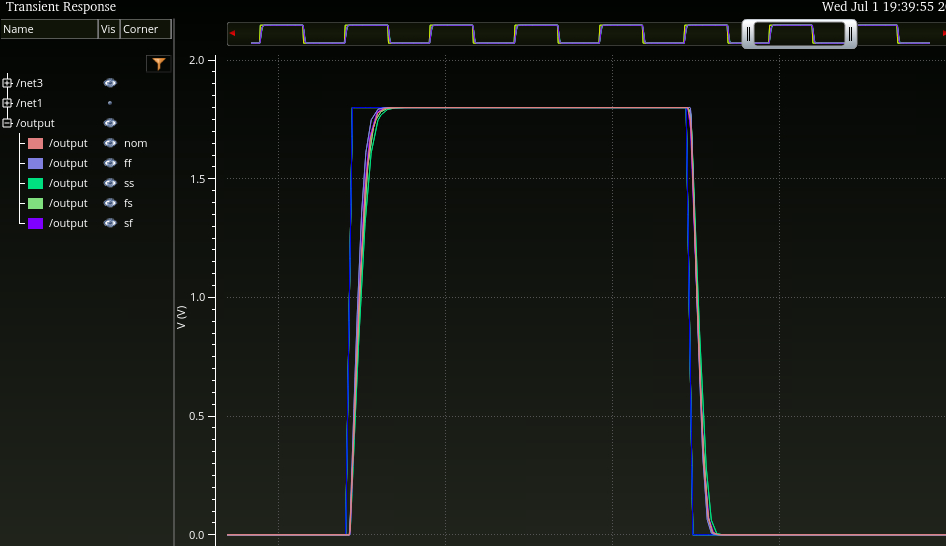
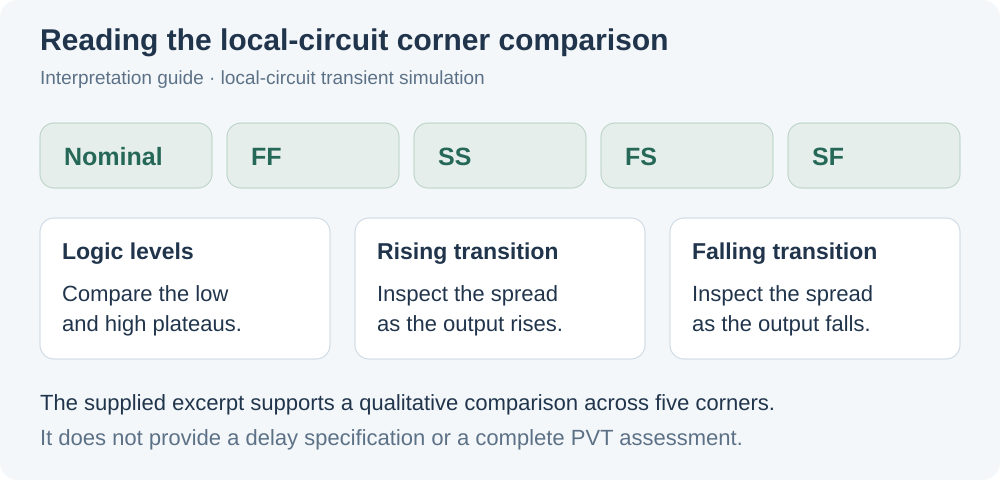

Circuit-level focus
My contribution to an ongoing MTJ p-bit project includes local circuitry for signal selection and output restoration. The work connects transistor-level circuit design to the interface requirements of a collaborative mixed-signal research effort.
This page presents a local circuit schematic and its simulated output response. I am a contributing researcher on the project, with responsibility for specific circuit and verification tasks.
My contribution
I worked on MUX and inverter circuitry for selecting signals and restoring their outputs for CMOS logic, alongside the project’s modeling and mixed-signal verification work. The examples here focus on the schematic and transient-simulation portions of that contribution.

The circuit work involves checking signal propagation through the local selection/restoration path and examining its output under the available process-corner models. The scope of these checks is the local interface circuit.
Process-corner transient simulation
The supplied transient plot overlays the output response for nominal, FF, SS, FS, and SF process corners. The traces show switching between approximately 0 V and 1.8 V, with visible differences around the rising and falling transitions.


The useful comparison is whether the output levels and transitions remain consistent across the shown process models. The cropped trace supports a qualitative inspection; extracting propagation delay would require a time scale and corresponding input reference.
These results document local circuit behavior during design and verification. The research project remains in progress.
Selected circuit figures
View the local circuit schematic and transient plot on GitHub ↗